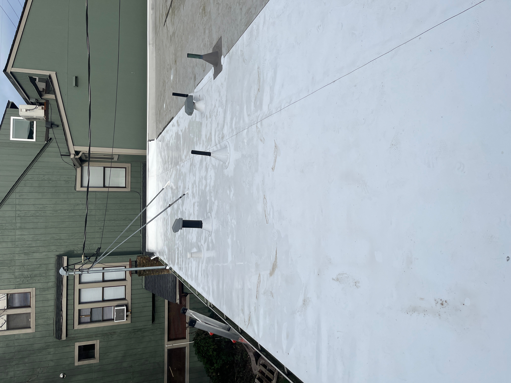
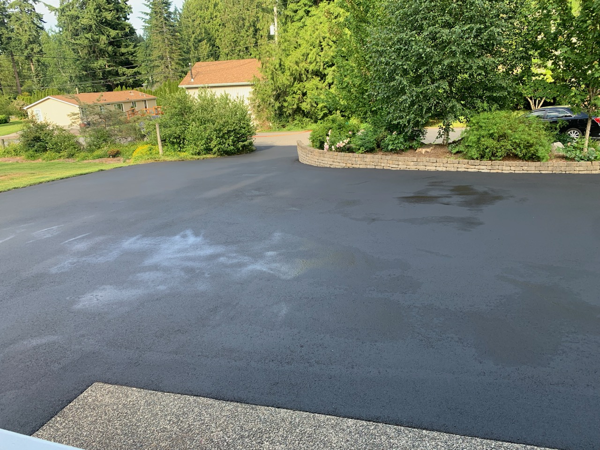
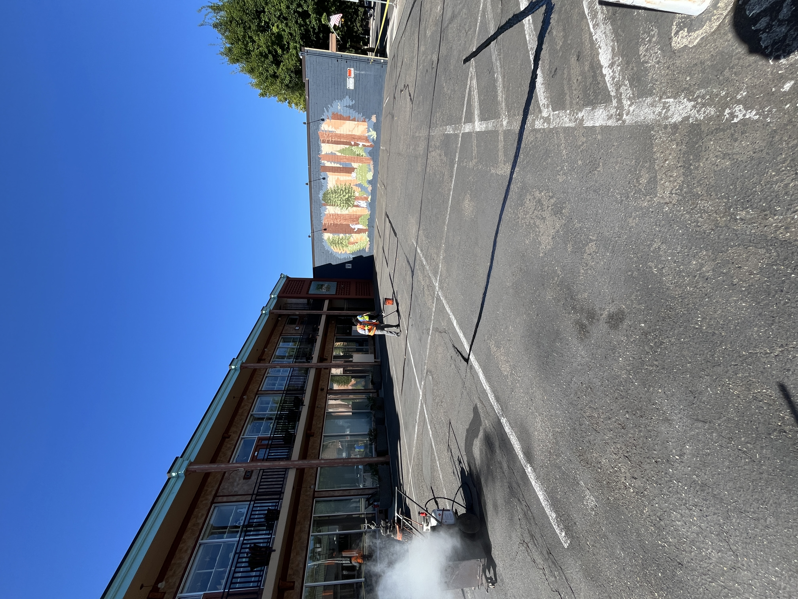
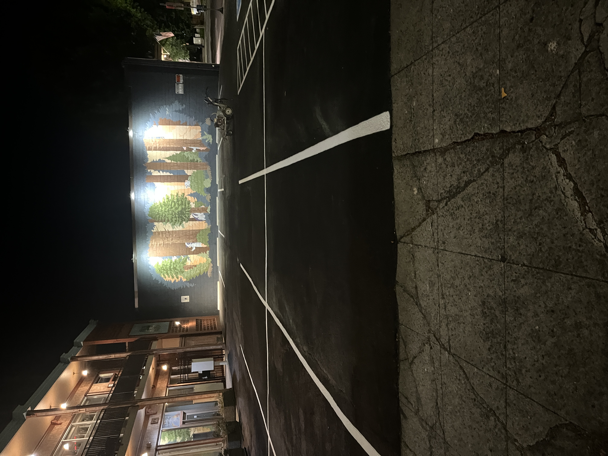

Real before & after results from jobs across the greater Seattle area.
Roof replacements, moss removal, soft washing, and flat roof installations.





Driveway paving, sealcoating, crack filling, and commercial lot work.







House washing, siding restoration, and soft wash results.


Additional paving and sealcoating results.
 New Asphalt Driveway
New Asphalt Driveway Driveway Sealcoating
Driveway Sealcoating Full Driveway Replacement
Full Driveway Replacement